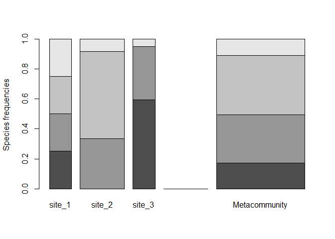
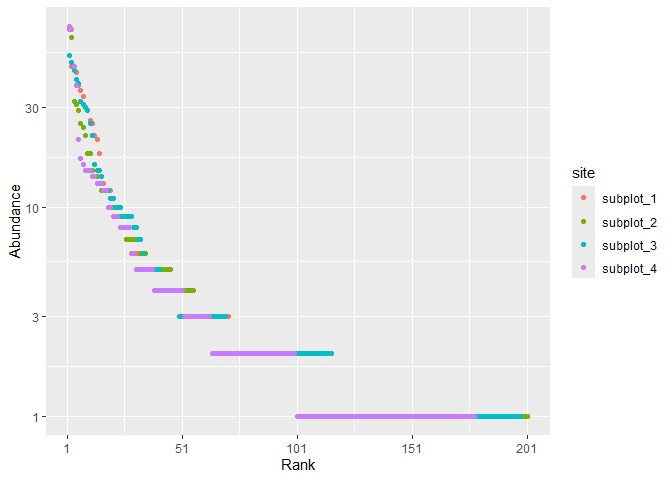
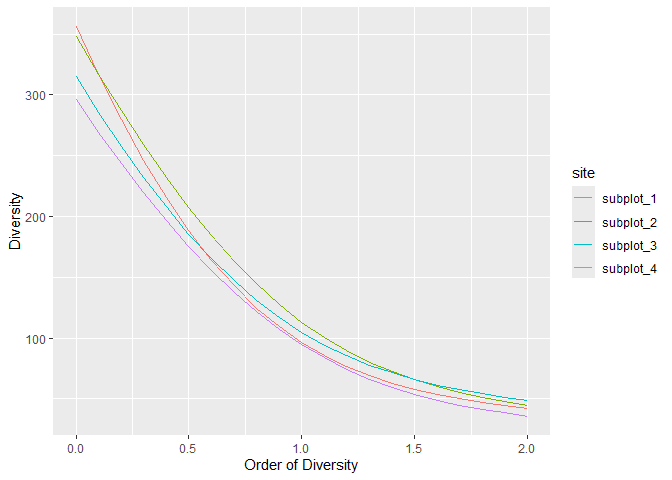
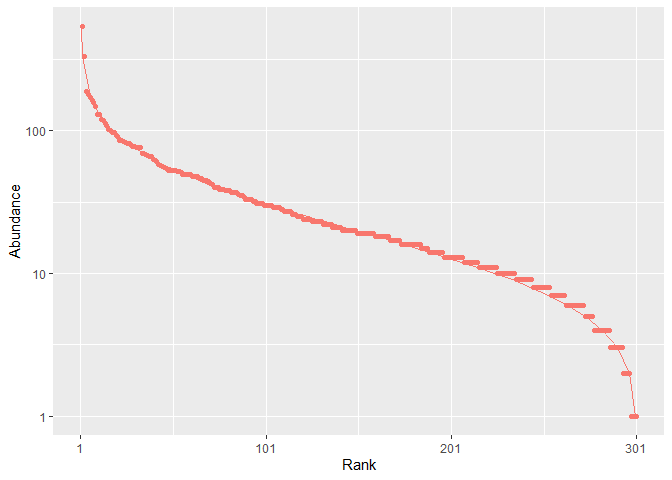

divent is an R package that provides functions to estimate alpha, beta and gamma diversity of communities, including phylogenetic and functional diversity.
It is a reboot of the package entropart to make it tidy, easier to use and optimize the code that has been added along years of research.
Installation
You can install the development version of divent from GitHub with:
# install.packages("pak")
pak::pak("EricMarcon/divent")Details
In the divent package, individuals of different species are counted in several communities which may (or not) be aggregated to define a metacommunity. In the metacommunity, the probability to find a species in the weighted average of probabilities in communities. This is a naming convention, which may correspond to plots in a forest inventory or any data organized the same way.
# Abundances of three communities with four species
abd <- matrix(
c(
10, 0, 25, 10,
20, 15, 10, 35,
0, 10, 5, 2
),
ncol = 4
)
# Community weights
w <- c(1, 2, 1)
# Organize the data
library("divent")
abd |>
as_abundances(weights = w) |>
# Plot it
plot(type = "Metacommunity")
Basic functions allow computing diversity of a community. Example data is a 6.25ha plot of rainforest in Paracou, French Guiana, divided into 4 subplots.
paracou_6_abd |>
autoplot()
Entropies such as Shannon’s, Simpson’s, or Hurlbert’s, and explicit diversity (i.e. effective number of species), aka Hill numbers, are estimated.
# Diversity of a tropical rainforest
div_richness(paracou_6_abd)
#> # A tibble: 4 × 5
#> site weight estimator order diversity
#> <chr> <dbl> <chr> <dbl> <dbl>
#> 1 subplot_1 1.56 Jackknife 3 0 355
#> 2 subplot_2 1.56 Jackknife 2 0 348
#> 3 subplot_3 1.56 Jackknife 2 0 315
#> 4 subplot_4 1.56 Jackknife 2 0 296
ent_shannon(paracou_6_abd)
#> # A tibble: 4 × 5
#> site weight estimator order entropy
#> <chr> <dbl> <chr> <dbl> <dbl>
#> 1 subplot_1 1.56 UnveilJ 1 4.57
#> 2 subplot_2 1.56 UnveilJ 1 4.73
#> 3 subplot_3 1.56 UnveilJ 1 4.65
#> 4 subplot_4 1.56 UnveilJ 1 4.55
ent_simpson(paracou_6_abd)
#> # A tibble: 4 × 5
#> site weight estimator order entropy
#> <chr> <dbl> <chr> <dbl> <dbl>
#> 1 subplot_1 1.56 Lande 2 0.976
#> 2 subplot_2 1.56 Lande 2 0.978
#> 3 subplot_3 1.56 Lande 2 0.980
#> 4 subplot_4 1.56 Lande 2 0.972By default, the best available estimator of diversity is used, according to the data. Diversity profiles are estimated.
profile_hill(paracou_6_abd) %>% autoplot
Communities can be simulated and plotted.
rc <- rcommunity(1, size = 10000, distribution = "lnorm")
autoplot(rc, fit_rac = TRUE, distribution = "lnorm")
Phylogenetic entropy and diversity can be calculated if a phylogenetic (or functional), ultrametric tree is provided, with the state-of-the-art estimation-bias correction.
# Phylogenetic diversity of order 1, based on the taxonomy
div_phylo(paracou_6_abd, tree = paracou_6_taxo, q = 1)
#> # A tibble: 4 × 4
#> site weight estimator diversity
#> <chr> <dbl> <chr> <dbl>
#> 1 subplot_1 1.56 UnveilJ 41.0
#> 2 subplot_2 1.56 UnveilJ 52.9
#> 3 subplot_3 1.56 UnveilJ 46.1
#> 4 subplot_4 1.56 UnveilJ 43.2Similarity-based diversity is calculated, based on a similarity matrix.
# Similarity is computed from the functional distance matrix of Paracou species
Z <- fun_similarity(paracou_6_fundist)
# Calculate diversity of order 2
div_similarity(paracou_6_abd, similarities = Z, q = 2)
#> # A tibble: 4 × 5
#> site weight estimator order diversity
#> <chr> <dbl> <chr> <dbl> <dbl>
#> 1 subplot_1 1.56 UnveilJ 2 1.31
#> 2 subplot_2 1.56 UnveilJ 2 1.33
#> 3 subplot_3 1.56 UnveilJ 2 1.32
#> 4 subplot_4 1.56 UnveilJ 2 1.30The diversity of a metacommunity, i.e. \(\gamma\) diversity, can be partitioned into \(\alpha\) (that of communities) and \(\beta\) diversities.
# Partitioning of diversity of order 1 (Shannon)
div_part(paracou_6_abd, q = 1)
#> # A tibble: 7 × 6
#> site scale estimator order diversity weight
#> <chr> <chr> <chr> <dbl> <dbl> <dbl>
#> 1 Metacommunity gamma "UnveilJ" 1 111. 6.25
#> 2 Metacommunity beta "" 1 1.09 NA
#> 3 Metacommunity alpha "" 1 102. NA
#> 4 subplot_1 community "UnveilJ" 1 96.3 1.56
#> 5 subplot_2 community "UnveilJ" 1 113. 1.56
#> 6 subplot_3 community "UnveilJ" 1 105. 1.56
#> 7 subplot_4 community "UnveilJ" 1 94.6 1.56Vignettes
A quick introduction is in vignette("divent").
A full documentation is available online, in the “Articles” section of the web site of the vignette.
The documentation of the development version is also available.